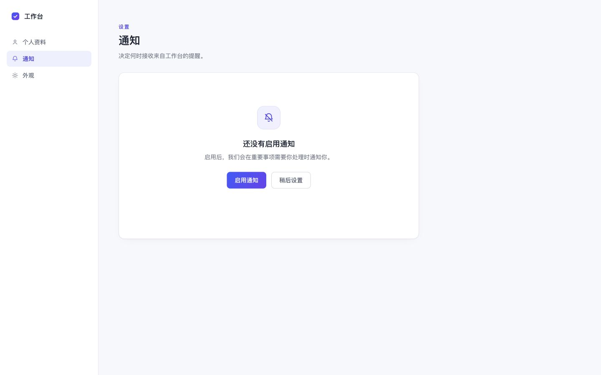

目标完成通知设置页空状态
允许
index.html
styles.css验收布局 · 响应式 · 交互状态
 KIMI PARTNER
KIMI PARTNER
01 / DESIGN BRIEF
DESIGNER SETS THE STANDARD
真实项目从明确的设计目标、文件边界和验收标准开始。
index.html
styles.cssSCOPED HANDOFF
任务只开放 2 个文件；依赖、Git 和项目外路径保持关闭。
kp-29ec4b4b-752b-4080-96f7-04a40f87e2b2
KIMI IMPLEMENTS

CODEX VERIFIES
Codex 重新核对实际变更、自动化测试与浏览器结果。
DESIGNER MAKES THE CALL
Kimi 发挥前端表现力，Codex 守住工程质量；最终视觉与体验判断仍由设计师负责。
github.com/jevonhou/kimi-partner